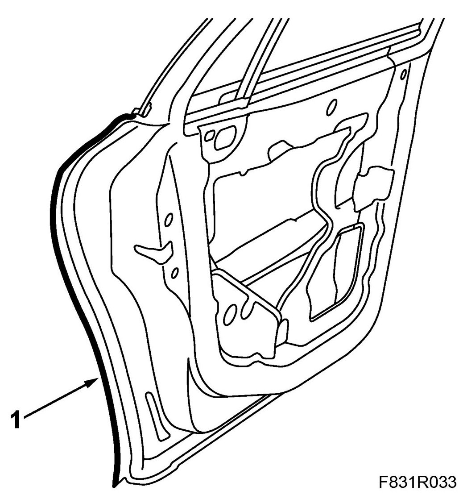
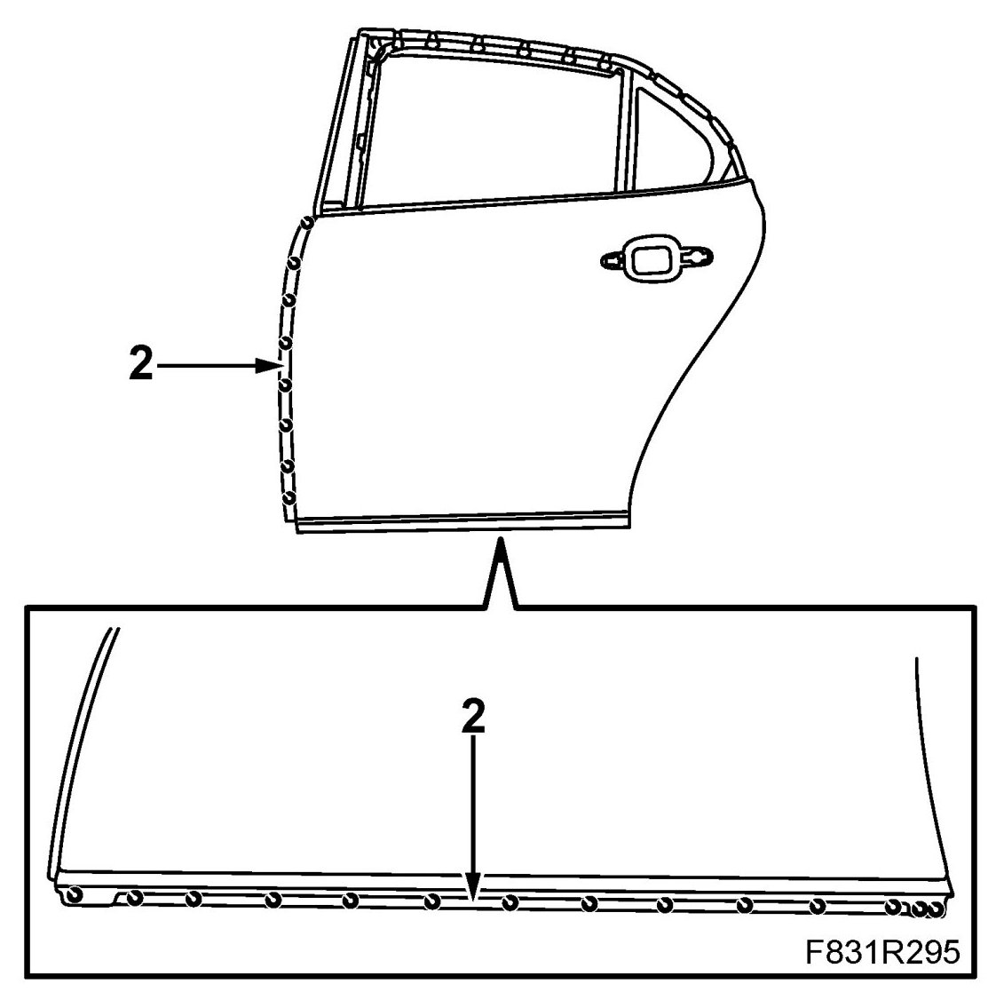
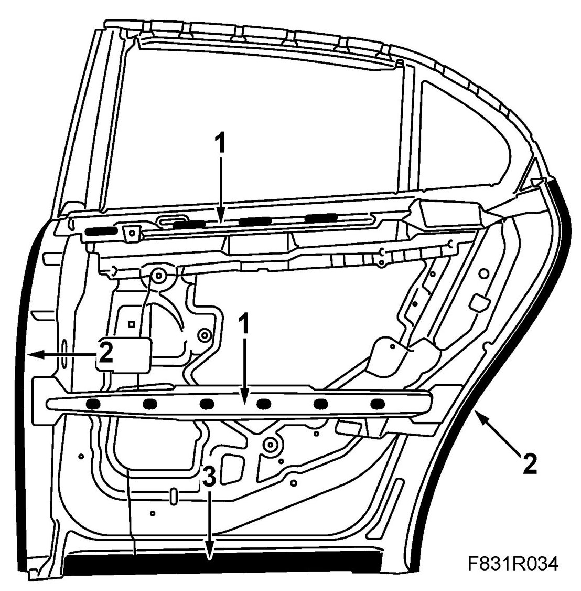
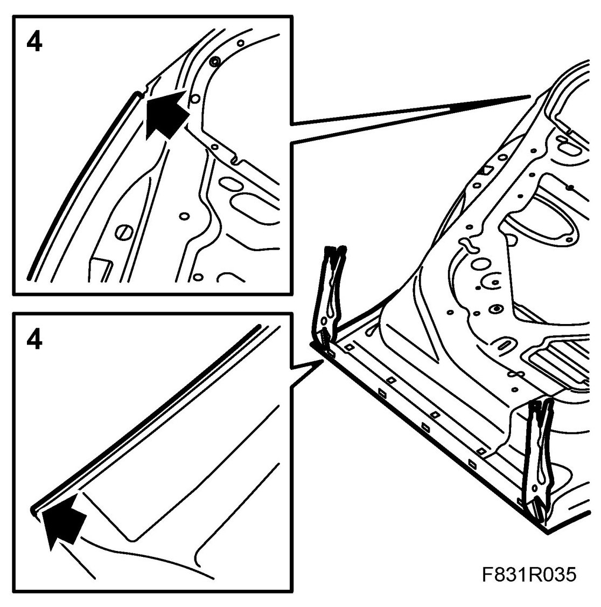
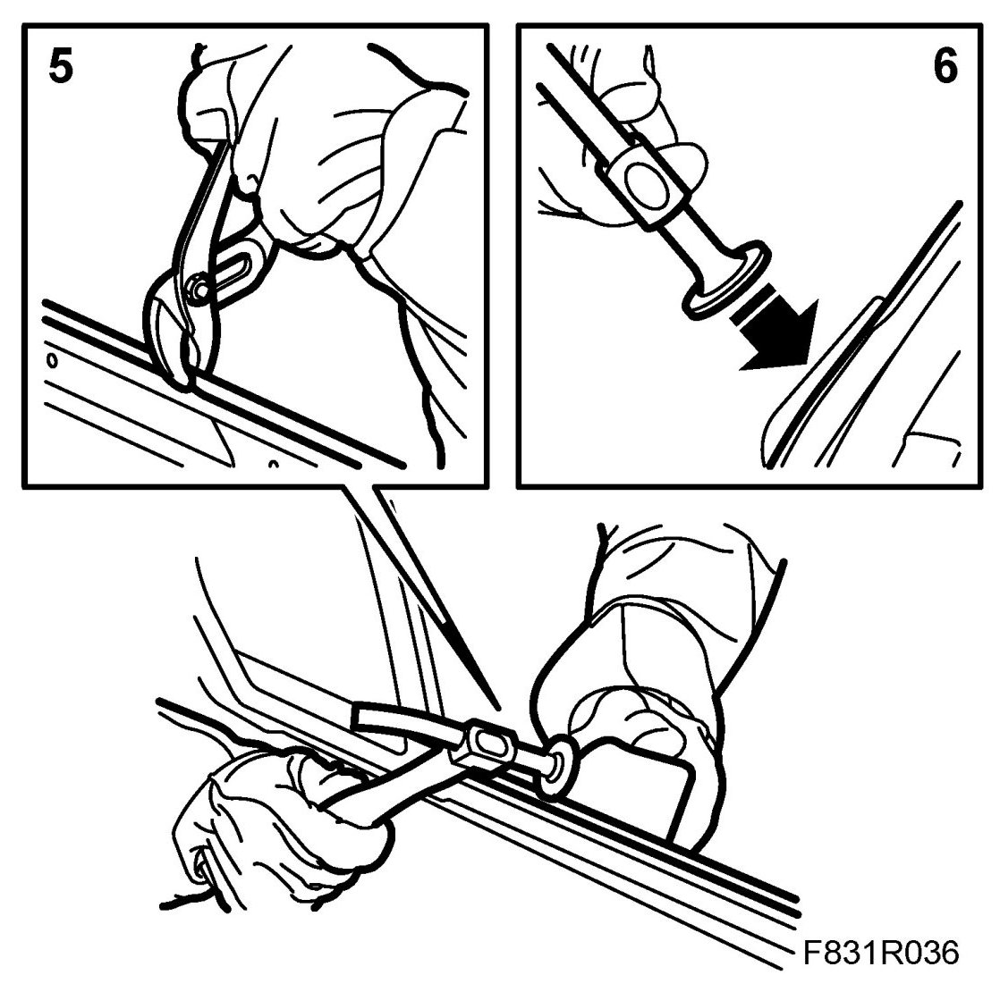

Rear Door Panel
Rear Door Panel
To remove
1. The outer door panel is folded over the door framework at the back. Grind away the fold so that the outer door panel comes loose.

2. Drill out the spot welds.

3. Knock the outer door panel loose and lift it away.
4. Remove the remaining metal folds inside the door framework.
5. Align the edges of the door structure and grind clean the door structure.
To fit
1. Apply sealant on the impact members. Use Terostat 1k-PUR.

2. Apply adhesive to the front and rear edges of the door framework. Use Teromix 6700.
3. Apply welding primer to the bottom edge of the door framework. Use Teroson zinc spray.
4. Position the new outer door panel, making sure the metal folds are against the door framework. Secure the clamps.

5. Spot weld on the door frame at the front edge and the bottom. Knock down and clamp the upper outer door panel metal fold.

6. Knock in the metal fold on the rear edge of the door with a hammer. Do not use pliers as they may damage the outside of the door.
7. Fit the door in place and check its fit and alignment with the body. Adjust as necessary.
8. Wash away surplus welding primer. Welding primer reduces the adhesion of paint, filler and sealant.
9. Apply primer to all bare metal surfaces. Use Standox 1K Fullprimer.
10. Use Terostat 1K-PUR to seal joints and metal folds.
11. Apply anti-corrosion agent to the door after it has been painted.